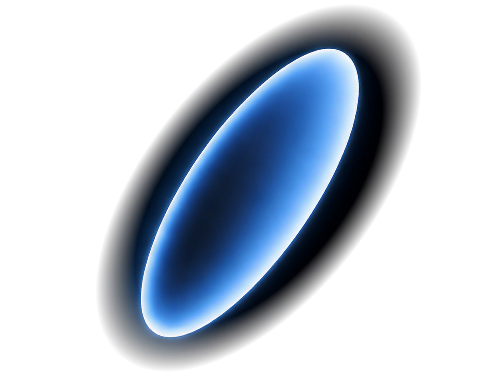
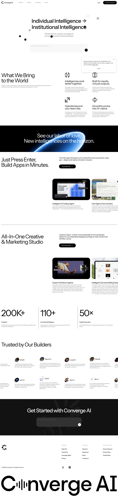
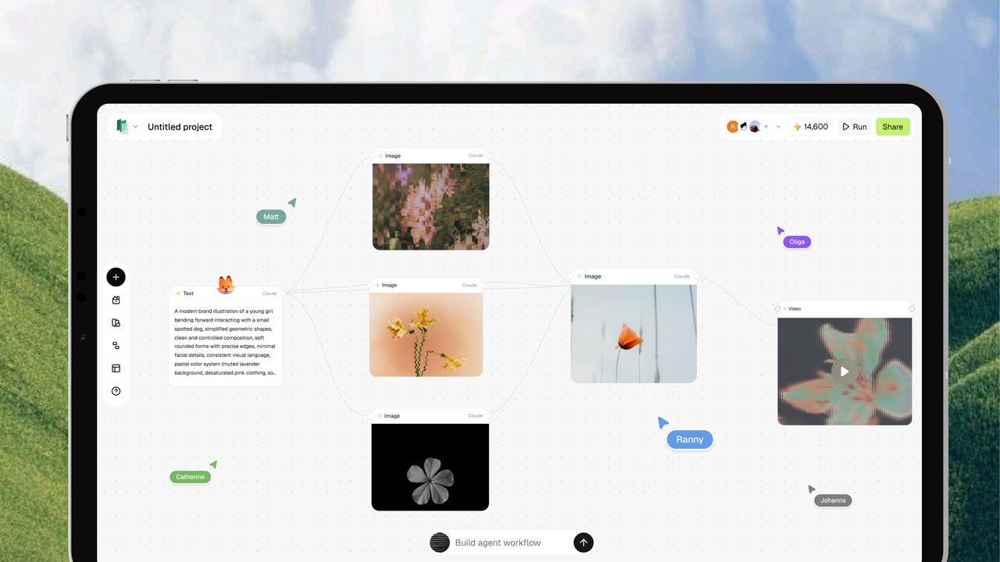
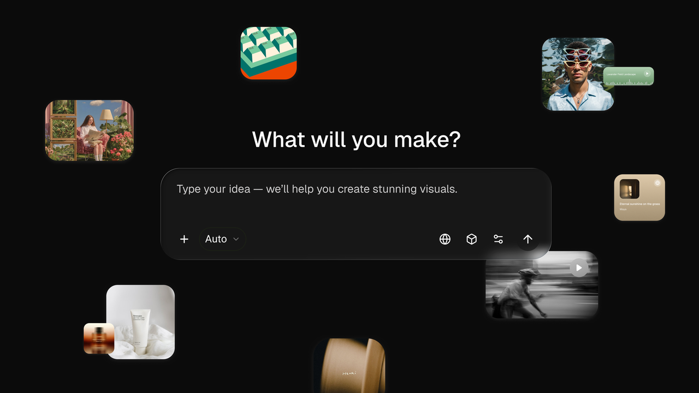
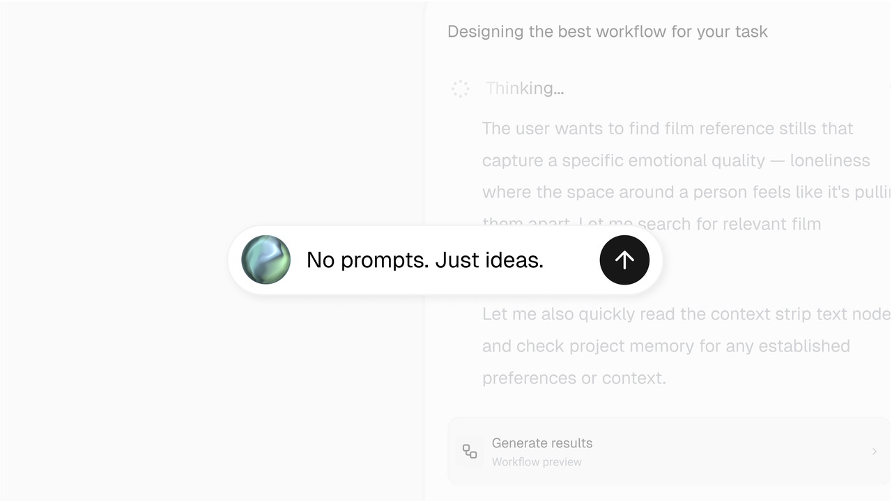

用最少的颜色，把「散」与「聚」的对比做到极致
converge 是一套把散落收敛成秩序的黑白系统。它的高级感不来自色彩，而来自纯白与近黑之间的张力、极大留白，以及明暗场轮流出现的节奏。首屏一句话点破主张：从个体智能走向机构智能。
承载内容与叙事。body 实测背景 lab(100 0 0)（纯白），正文近黑，副标题走中灰 #767676。
- 纯白底加近黑字，靠对比而非颜色建立层次
- 极大留白，首屏只留一句话与一个输入框
- 副标题、次要文字统一 #767676 中灰
承担转场与情绪。底色约 #0a0a0a，并在这里放出全站唯一有分量的彩色。
- 深黑过渡屏插在两段白色内容之间，制造呼吸
- 白色大标题压在黑底上，一道 #0285ff 蓝色光弧横扫
- 这是全站唯一放出彩色的时刻
关键发现：零彩色是主动克制，不是能力缺失
站点底层其实备着一整套 Tailwind 彩色调色板（红、橙、黄、绿、蓝、紫都在 CSS 变量里定义好了），设计却选择按住不用，只在暗场放出一次蓝。连品牌 --accent 变量都实测为 lab(96.52 0 0)，解析成近白 #f5f5f5（恰是 --color-neutral-100）——它的「强调色」本身就是一层更白的白。
几乎只有白、灰、黑，和一次被吝惜的蓝
点任意色块复制 HEX。次数为该色值在样式表文本里出现的频率（实锤）；语义角色为推断。注意最后一格：站点自己的强调色，解析出来其实是一层近白。
明场基底
墨色
唯一强调 — 只在暗场出现
浮动收敛的黑色小球
全站最强的记忆点，也是 converge（收敛）这个名字的字面可视化。要点是景深分层加向心漂浮：前景小而锐利的纯黑圆点，背景大而虚的灰色散景，整体存在一个朝中心的弱引力，缓慢聚拢又不完全塌陷。在下面的舞台里提问或点箭头，看它汇聚。
filter:blur() 实现，物理由 requestAnimationFrame 驱动。

landing-convergence-orbit.png（线上引用 17 次，含 @2x），是这套「收敛」母题的官方静态定格。上方是本页用 DOM 加 requestAnimationFrame 物理实时复现的动态版；两者并置，便于校准小球的尺寸分布、景深虚实与向心聚拢的观感。锐利的纯黑圆点
小尺寸、纯黑 #0a0a0a、不加模糊、高不透明度。它们是画面的近景。
虚化的灰色散景
大尺寸、blur 到十几像素、低不透明度，把二维画面推出景深，是照片感的来源。
向心的弱引力
每颗球朝中心附近的家点轻弹加噪声漂浮；提问时家点切到正中心，球群收敛，隐喻上下文汇聚成答案。
景深分层（逐球模糊）
// focus: 1=前景锐利, 0=背景散景
var sharp = focus > 0.6;
size = sharp ? 10..26px : 30..84px;
bg = sharp ? "#0a0a0a" : "#171717";
filter = sharp ? "none"
: "blur("+(4+(1-focus)*16)+"px)";
opacity= sharp ? .95 : .10 + focus*.22;向心物理（每帧）
// mode: ambient | converge | disperse
tx = mode=="converge" ? cx : (mode=="disperse"?ex:hx);
k = mode=="converge" ? .02 : (mode=="disperse"?.014:.006);
v += (tx - x) * k; // 朝目标的弹力
v += noise(); // 布朗漂浮
v *= .92; x += v; // 阻尼后积分插一屏深黑，放出唯一一道蓝
在两段白色内容之间插入一屏纯黑过渡，是 converge 制造呼吸感与转场的手法。这一屏也是全站唯一放出彩色的地方：一道 #0285ff 的蓝色光弧从底部升起。下面这块黑，就是把你正在读的白色页面，切进它的暗场节奏。
See our labor of love,
New intelligences on the horizon.
暗场大标题为站点渲染实拍文案；蓝色光弧用实测最高频蓝 #0285ff 复现（弧形与位置为观察推断）。
深黑过渡屏底色，与明场纯白轮流出现。
全站唯一有分量的彩色，出现 32 次，多在这一屏。
复刻时别把整页做成一个色调，明暗交替才是它的呼吸。
一套以 Instrument Sans 撑起的巨型标题
首屏 h1 实测为 Instrument Sans，字重 500，字号 64px，字距 -1.92px（约 -0.03em），行高 70.4px，颜色纯黑。本页已把从 converge.ai 提取的真实字体文件（Instrument Sans、Schibsted Grotesk 两支可变字体）用 @font-face 自托管接入，CDN 仅作兜底，非替身。
Instrument Sans 的人文气质里带着秩序感，中等字重加负字距，就是巨型标题张力的来源。
h1 计算样式坐实：字号 64px，字重 500，字距 -1.92px，行高 70.4px，颜色纯黑。body 同样以它打底。
更硬朗的 grotesque，已加载并登记了字体变量。页脚巨型字标即以它复现（落点为推断）。
已加载并有变量，用途推断
界面与回退字体
产品内公式渲染，预加载字体 4 个
Reddit Sans、Inter 的真实字体文件也在 real-assets/fonts 里，但它们是站点的辅助与兜底字体，并非本页标题/正文所用，故按「只接真正用到的 1 到 3 支」原则未接入。本页只自托管了承担标题与正文的 Instrument Sans 与展示体 Schibsted Grotesk——都是可变字重（分别覆盖 400–700、400–900）。
一条曲线管到底，0.15 秒是它的默认手感
点任一卡片重放。曲线与频次为真实取值；为看清曲线，演示时长统一放慢，卡片里标注了实测的真实用途与时长。
时长阶梯（真实 token，感知刻度已压缩）
母题一：缓慢氛围层
15s（出现 12 次，最高）与 40s 这样的超长循环，驱动证言走马灯 testimonial-marquee-left、点阵 logo 的缓转与小球漂浮氛围（用途为推断）。
母题二：敏捷微交互
按钮过渡实测把颜色、背景、边框、描边一起走 0.15s cubic-bezier(0.4, 0, 0.2, 1)——一套曲线覆盖几乎所有微交互，克制到动效层。
直角与药丸并置，点阵贯穿到品牌
圆角语言（实测）
三种圆角并存：主 CTA 是 62px 全圆药丸（纯黑底白字），卡片多在 14px 上下，还有一批刻意的 0px 直角元素。直角与药丸并置，是它黑白气质里刻意留的一点硬朗。
一簇大小不一的黑色圆点，松散排成点云，像小球收敛的定格。它在导航、分区图标与页脚字标里反复出现（本 SVG 为观察复现）。
技术栈（高置信推断）
自定义变量里成片的 --tw-* 与 --color-* 语义色、--spacing:.25rem、--breakpoint-xl:80rem 坐实了 Tailwind CSS v4；accordion-down/up 关键帧与 calc(var(--radius) - 2px) 是 shadcn/ui 的招牌；enter/exit 与 --tw-enter-* 指向 tailwindcss-animate 一类插件。导航实测 backdrop-filter: none、背景纯白——它不靠毛玻璃，靠干净的白与滚动分隔线。
数字的排布（站点原味）
数字为站点渲染实拍内容，用同款 Instrument Sans 负字距复现其排布气质。
把上面的数值直接接进你的产品
步骤一，落地 token（复制即用）
:root{
--paper:#ffffff; --paper-2:#fafafa;
--ink:#0f0f0f; --ink-strong:#000;
--ink-3:#767676; /* 副标题灰 */
--dark:#0a0a0a; --blue:#0285ff;
--ease-std:cubic-bezier(.4,0,.2,1);
--dur-micro:.15s;
--r-btn:0px; --r-card:14px; --r-pill:62px;
}步骤二，明暗场交替加蓝弧
.sec-light{background:#fff;color:#0f0f0f}
.sec-dark {background:#0a0a0a;color:#fafafa}
/* 唯一彩色:底部升起的蓝色光弧 */
.arc{background:radial-gradient(
70% 44% at 50% 122%,
rgba(2,133,255,.9), transparent 60%)}选型决策
- 浮动收敛小球用 DOM 加 CSS blur 加 rAF 物理，逐球控制景深；球多则转 canvas
- 深黑屏蓝弧用被裁切的大椭圆径向渐变加 blur，纯 CSS 零依赖
- 点阵 logo用内联 SVG 圆点簇，可复用到导航与页脚字标
- 产品能力用真实截图裱圆角卡，不堆形容词
- 微交互统一
--ease-std加0.15s
工程坑
- 别把整页做成一个色调：高级感来自明暗交替，全白或全黑都丢节奏
- 蓝色要吝啬：
#0285ff只在暗场放一次，多放一处就破坏张力 - 景深靠 blur 不是靠缩放：背景球要模糊加低透明度的散景感
- 暖白与纯白并存：
#fafafa铺大底，#ffffff做主背景 - 尊重
prefers-reduced-motion：关小球物理与光弧呼吸，给静态散布
线上整页真实渲染
下面是 converge.ai 的真实渲染截图与真实素材（非重绘）：整页与首屏实拍、真实产品界面截图，以及站点真实视频，用于核对版式、明暗场顺序与小球、蓝弧的观感。文字为站点原文。


真实产品界面（裱框）



以上为 real-assets 里的站点真实产品截图，佐证「产品能力用真实截图裱圆角卡」这一手法。更重的首屏、看板与视频封面大图（enter-*、framia-video 等，单张 2–8MB）同在 real-assets/image，为控制页面体量此处未内联。
站点真实视频
converge_video.mp4（约 707KB），muted / loop / playsinline 与站点一致。线上默认以 hidden 类隐藏，推测为页脚暗色带的装饰性循环片段（具体角色为推断）；此处如实播放，佐证媒体清单里的「1 支 video」。每个数值从哪来，什么是实锤、什么是推断
- 提取方法
- Playwright 读关键元素计算样式（body、h1、nav、按钮），拿到色值、字体、字号字距行高、圆角、过渡曲线；再服务端抓样式表源文本（不受 CORS 限制），对约 62.7 万字节的 CSS 做频次统计，得到高频 HEX、cubic-bezier、时长、圆角、关键帧与全部自定义变量。
- 实锤（源自抽取）
- body 背景
lab(100 0 0)，h1 纯黑且字号64px、字重500、字距-1.92px，按钮文字rgb(118,118,118)，导航backdrop-filter:none，以及高频色值及次数、三条缓动曲线、时长梯、圆角、关键帧名、字体加载清单、Tailwind 令牌全集与 media 计数。 - 推断（观察与公开资料）
- 小球的具体物理参数未从 JS 还原，本页复现为观感逼近；蓝弧用
#0285ff（最高频蓝）为高置信推断，精确渐变停靠点未逐点提取；技术栈判定、各时长具体驱动的元素、Schibsted Grotesk 与 Reddit Sans 的落点、以及真实视频的具体角色均为推断。 - 真实资产回填（本轮）
- 字体不再用 Google Fonts 替身：Instrument Sans（可变 400–700）与 Schibsted Grotesk（可变 400–900）两支真实字体文件直接从 converge.ai 提取、经
@font-face自托管，CDN 仅兜底。签名区嵌入了站点真实的landing-convergence-orbit.png，实拍区补入真实产品界面截图与站点真实视频converge_video.mp4。全部素材连同其线上 URL 与字节数登记在real-assets/manifest.json；本轮另附事实核查.md与设计评审.md。
一处被数据坐实的克制
「converge 几乎不用颜色」不是印象，是数据：整套 Tailwind 彩色调色板都在 CSS 变量里定义好了，正文却几乎不上色，连品牌 --accent 都实测为 lab(96.52 0 0)、解析成近白 #f5f5f5。凡冲突处，以抽取数据为准。
局限
只抓桌面视口的线上样式与截图，未覆盖移动端断点与登录后界面；未解包 JS bundle，小球物理与 canvas 用途为运行时观察；频次反映书写次数而非视觉权重（原子类会被复用）。对应某一次抓取快照，时间戳见 _data/converge.json。